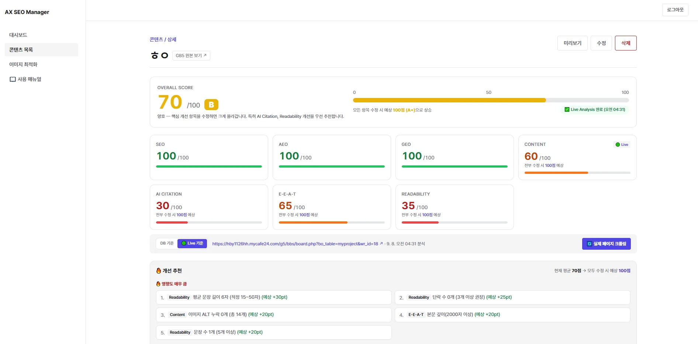

2026 · V1.0 Released
Web Publishing & System Design (100%)
Gnuboard 5 (PHP) + Next.js / Supabase
DOM Crawling · AEO · Schema JSON-LD
THIS PROJECT CALLED FOR AN AUTOMATED DIAGNOSTIC PIPELINE DESIGNED FOR GNUBOARD 5 POSTS. THE GOAL WAS TO BRIDGE THE GAP BETWEEN TRADITIONAL PORTAL SEO AND MODERN LLM ANSWER ENGINES (CHATGPT, PERPLEXITY) WITHOUT COMPLICATED MANUAL WORKFLOWS, DELIVERING AN INSTANT GRADE EVALUATION AND PRECISE CONTENT GUIDELINES IN UNDER ONE SECOND.
TRADITIONAL SEO TOOLS ONLY COUNT CHARACTER LIMITS ON META STRINGS, FAILING TO ASSESS WHETHER AI CAN UNDERSTAND AND CITE THE DOCUMENT. FURTHERMORE, DOM DISCREPANCIES BETWEEN DATABASE INPUT AND ACTUAL RENDERED SSR/CSR MARKUP OFTEN CAUSE MISSING H-TAG HIERARCHIES, INACCURATE IMAGE ALT ATTRIBUTES, AND BROKEN EEAT METADATA IN PRODUCTION.
THE SYSTEM WAS BUILT ON A 7-METRIC AUTOMATION ENGINE INTEGRATING PHP HOOK PIPELINES WITH GPT ENGINES. BY EXECUTING LIVE DOM CRAWLING ALONGSIDE INSTANT AI DRAFT GENERATION (JSON-LD, GEO SUMMARY, AND TARGETED FAQS), CONTENT MANAGERS GAIN FULL COMPLIANCE AND MEASURABLE IMPACT RANKINGS WITH A SINGLE CLICK.

기존 도구들은 복잡한 점수만 나열할 뿐 실제 게시글 작성자가 무엇을 어떻게 고쳐야 할지 실행 가능한 가이드를 주지 못했습니다. 또한 국내 CMS 생태계의 중심인 그누보드5와의 자동 연동 부재로 콘텐츠 갱신 시마다 수작업 진단을 거쳐야 했습니다.
그누보드5에서 글이 등록/수정되는 즉시 백그라운드 동기화를 거쳐 AI가 최적화 초안(Title, Meta, FAQ, JSON-LD)을 자동 생성하고, 실제 배포된 웹페이지의 DOM을 직접 크롤링하여 정밀 분석하는 올인원 워크플로우를 구축했습니다.
그누보드5의 write_update.php 훅을 통해 게시판 글이 작성 또는 수정될 때 AX SEO Manager 데이터베이스로 자동 전송 및 등록됩니다.
LLM 엔진이 본문 맥락을 분석하여 검색 클릭률을 높이는 메타 문구, ChatGPT 인용용 FAQ 3종, 전문 맥락 요약문, Schema.org JSON-LD를 자동 완성합니다.
ENGINE: GPT Structured Outputs API단순 텍스트 검사를 넘어 실제 서비스 중인 배포 URL의 HTML을 직접 패치합니다. H1~H3 위계, 이미지 ALT 태그 누락 여부, 내부링크 구조를 실시간 검사합니다.
FETCHER: Serverless HTML Parser진단 결과를 바탕으로 예상 점수 상승폭(+N pt)이 높은 개선 추천 항목을 영향도 순으로 정렬하여 관리자에게 직관적인 수정 가이드를 제공합니다.
OUTPUT: Actionable Task Priority매뉴얼에 규정된 7개 영역별 정량 지표와 배점 기준을 시스템화하여 각 영역별 100점 만점으로 독립 평가합니다.
실제 엔터프라이즈 환경 및 전문 웹사이트 운영에 필요한 심화 도구를 프론트엔드 레벨에서 통합 구현했습니다.
인물, 조직, 장소, 기술, 제품, 이벤트 6대 개체를 추출하고, 해당 토픽에서 필수적으로 다뤄져야 할 시맨틱 키워드의 본문 포함률을 산출합니다.
경쟁사 URL을 입력하면 실시간으로 해당 페이지의 DOM을 크롤링하여 본문 분량, 표/리스트 사용 여부, 인용 가능성 요소를 내 글과 1:1 비교합니다.
서버 부하 없이 브라우저 단에서 Canvas API를 활용해 고화질 이미지를 Drag & Drop으로 WebP 포맷 변환 및 압축하여 일괄 다운로드합니다.
제목 체계(H1~H6)의 단일성 보장 및 의미론적 태그(`<article>`, `<section>`, `<cite>`)를 엄격히 구조화하여 스크린 리더와 검색 봇 모두에게 최적의 파싱 경험을 제공합니다.
그누보드5의 PHP 기반 게시글 저장 트랜잭션 흐름을 침해하지 않으면서, `write_update.php` 시점에 비동기로 진단 서버와 동기화되도록 연동 설계를 완료했습니다.
1920px 이상의 울트라와이드 모니터부터 모바일 디바이스까지 유려하게 반응하는 유동형 그리드 시스템(Fluid Grid)을 구축하여 어떤 해상도에서도 왜곡 없는 정보 전달력을 유지합니다.
외부 의존성을 최소화하고 순수 CSS 유틸리티와 모던 브라우저 API를 활용하여 초기 로딩 속도를 극대화하고 Lighthouse 95점 이상의 접근성을 달성했습니다.